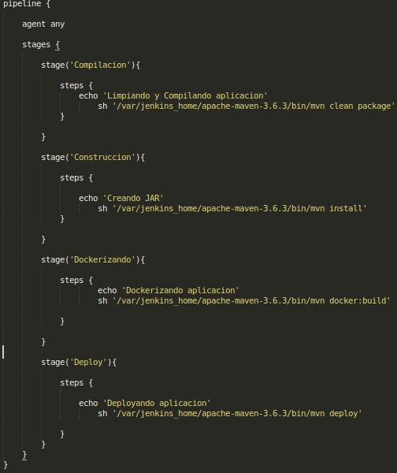
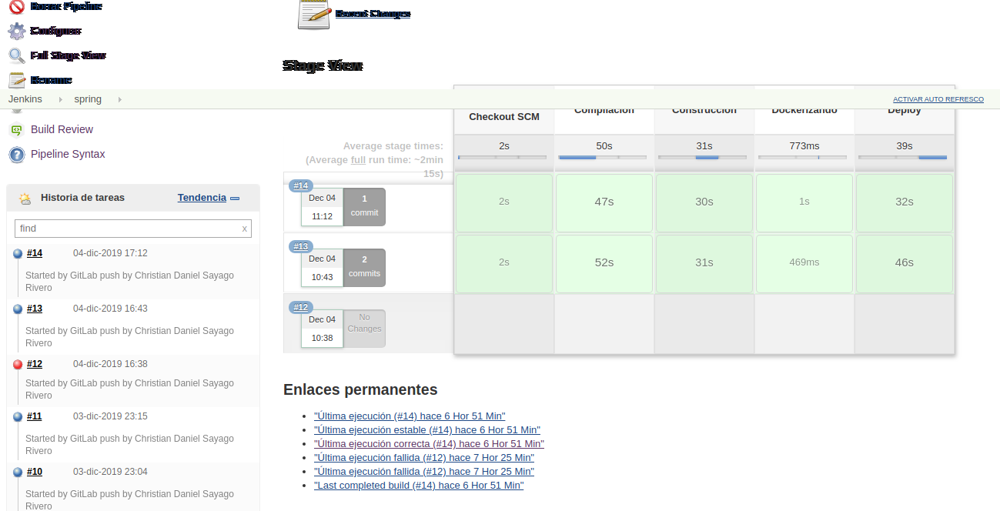

Jenkins Config.
Instalación
Fedora:
yum update
yum install jenkins
Plugins utilizados
- Git
- Gitlab
- Nodejs
- Sonarqube
Primeros pasos...
Al acceder a Jenkins, una vez teniendo en mano el acces token que se genero desde Gitlab es necesario agregar la credencial de acceso para su exitosa comunicación y de esta manera lograr la conexión de ambos. De esta manera sera agregada esta configuracion tal cual lo muestran las imagenes siguientes...
Nos dirigimos al apartado de credenciales

Agregar Token
El token obtenido en gitlab es necesario para esta parte ya que es el acceso a jenkins desde gitlab para asi realizar la conexion de ambas tecnologias, en este apartado es recomendable colocar un ID y descripcion de que tipo es esta credencial ya que manejaremos diversas credenciales.

Debe dar una credencial asi como el ejemplo:

Configuracion-Jenkins-gitlab
Nos dirigimos al apartado de [Aministrar Jenkins] --> [Configurar Sistema] --> [Gitlab]
En la opcion credentials debe ser la agregada anteriormente.

Agregar un espacio de trabajo.
Regresamos al dashboard de jenkins, es hora de crear una nueva tarea.

Creada la tarea nos mandara a configurar los procesos de jenkins en el proyecto.
En la pestaña General aparecera en Gitlab Connection la credencial por default antes agregada.

En la pestaña triggers solo debe seleccionarse la casilla:
Build when a change is pushed to GitLab. GitLab webhook URL: http://172.17.0.1:8080/project/spring (Nota: El link varia depende el host en el que este montado)
Es importante tomar en cuenta esta URL y el token que se genera, ya que estas seran ingresadas en la configuración del proyecto guardado en Gitlab

La configuracion de estas debe estar en Gitlab ubicados en nuestro proyecto, en el cual es necesario ir a [Settings] ---> [Integrations]

Una vez dentro de esta opción tendremos que copiar y pegar la URL y el Token obtenidos para crear el Webhook correspondiente para que se genere la conexion y ejecute el pipeline que debe estar dentro de nuestro proyecto.

Pulsamos en Add Webhook para guardar nuestro puente de conexión, el cual nos servira al momento de realizar un commit y push jenkins de esta manera pueda detectar que hubo cambios y comienze a ejecutar el Jenkinsfile (Pipeline).
Regresamos a la terminación de configuracion
El siguiente paso es simplemente Guardar las configuraciones.

Ejemplo de Pipeline para proyecto Spring boot 

Una vez hecho un push comenzara a ejecutar los pasos establecidos en el Jenkinsfile si es todo correcto pintara el Stage View en verde pero en caso de algun fallo debera mandarlo de color Rojo.
